8. Introduction to the NestJS Web Framework
8.1. Sources
This course draws on the following sources:
- the official NestJS website: https://nestjs.com and its documentationhttps://docs.nestjs.com;
- the GitHub framework repository: https://github.com/nestjs/nest;
8.2. Tools used
- Node.js, version LTS (18 or higher), and its npm package manager;
- CLI from NestJS (@nestjs/cli), a command-line tool that creates the structure of a new project, generates files (controllers, services, modules, etc.) based on a ready-made template, and starts the development server;
- a code editor: Visual Studio Code, with the TypeScript extension;
- a client (HTTP) for testing the exposed endpoints (URL): Postman, or simply the
curlcommand; - a MySQL database server.
8.3. The role of NestJS in a web application
NestJS is a Node.js framework written in TypeScript, designed to build the server-side of a web application — most often a API REST (jSON), sometimes a GraphQL or a real-time application (WebSockets). It does not reinvent the handling of the HTTP protocol itself: by default, it relies on Express, a more rudimentary Node.js framework responsible for receiving raw HTTP requests and responding to them (Fastify is a possible alternative to Express). NestJS sits on top of this, providing a code organization that neither Node.js nor Express imposes on their own: division into modules, controllers, and services; dependency injection; decorators...
Its architecture is heavily inspired by Angular (decorators, modules, dependency injection). The general idea is that of a single entry point that receives all requests from the application and then routes them to the appropriate controller based on the requested action; each controller, in turn, relies on services that handle business logic and data access, rather than writing this code directly in the controller.
NestJS is primarily designed to generate jSON responses: by default, whatever a controller method returns is automatically converted to jSON and sent to the client, without any special configuration—we’ll verify this in the first action of the mini-project below. Server-side rendering of HTML views (using Handlebars, EJS, or Pug) is still possible—we’ll actually use it a little later on—but it’s an option, not the default behavior.
8.4. The MVC Development Model of NestJS
Three concepts form the structure of a NestJS application:
- modules (@Module decorator): a module groups together a set of interrelated features—it declares which controllers and services belong to it, which other modules it depends on, and what it makes available to others. A NestJS application always starts from a root module, AppModule, which assembles all the other modules in the project;
- controllers (@Controller decorator): A controller is the entry point of the application—a class in which each method receives HTTP requests corresponding to a specific URL, and returns a response to the client;
- providers (the @Injectable decorator): a provider is a regular class, typically responsible for business logic or data access, which NestJS can automatically create and provide (i.e., “inject”) to any controller or service that needs it.
In practice, a class that needs a provider simply declares it as a parameter in its constructor—NestJS creates the necessary instance and passes it automatically, without ever having to write new yourself: This is called constructor-based dependency injection, a practice that is almost always used in NestJS. We’ll see a concrete example of this in the line below.
8.4.1. A First NestJS Project
8.4.1.1. The demo project
A very small project, with a single action [/bonjour], to explore the tools.
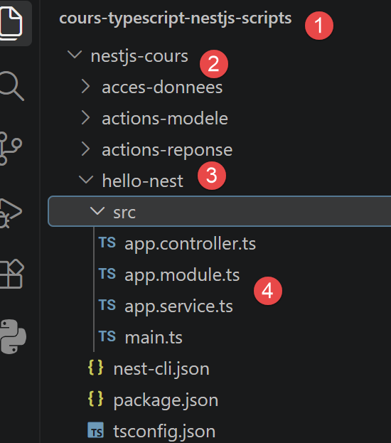
8.4.1.2. Project Setup
This project is already included, ready to use, in the script directory you downloaded—it’s the nestjs-cours/hello-nest/ folder shown in the screenshot above (label [3]), with all its files already in place. So you don’t need to create anything: simply open this existing folder in VSCode (run npm install if you haven’t already—see the introduction to this document) and proceed directly to the next section.
For your information, if you wanted to recreate this project yourself from scratch (in an empty folder, outside the course directory structure), here’s how it was generated:
This command generates a project containing the following essential files:
8.4.1.3. The Architecture of a NestJS Application
These four files alone illustrate the architecture of MVC: an entry point (main.ts), a root module (app.module.ts), a controller (app.controller.ts), and a service (app.service.ts).
8.4.1.4. The C
src/app.service.ts
Let’s comment on this code:
- line 1: [// src/app.service.ts] — a simple comment indicating the relevant file, with no effect on execution — useful for keeping track when multiple files are shown in succession.
- line 2: [import { Injectable } from '@nestjs/common';] — as in standard TypeScript, we explicitly import each element used, in this case from @nestjs/common, the module that contains most of NestJS’s decorators and utility classes.
- line 4: [@Injectable()] — a decorator is an annotation placed immediately above a class, method, or parameter TypeScript (preceded by the @ symbol), which modifies or extends its behavior without altering its code—the mechanism upon which virtually the entire NestJS vocabulary is based. @Injectable() marks this class as a provider: NestJS will create it on its own and automatically provide it to any other class that requests it in its constructor, without ever having to write new AppService().
- Line 5: [export class AppService {] — a regular TypeScript class, exported so it can be imported elsewhere (here by the controller) — nothing specific to NestJS at this point, aside from the decorator preceding it.
- line 6: [ getBonjour(): string {] — a regular method; : string declares the type of the return value — a feature specific to TypeScript, absent in JavaScript.
- Line 7: [ return 'Bonjour, tout le monde !';] — the actual content returned — for now, a simple fixed string.
src/app.controller.ts
Let’s comment on this code:
- line 1: [// src/app.controller.ts] — same note as above: a comment that has no effect on execution.
- line 2: [import { Controller, Get } from '@nestjs/common';] — imports the two decorators used later: @Controller (for the class) and @Get (for a method).
- line 3: [import { AppService } from './app.service';] — imports the service defined just before, so it can be injected into the constructor below.
- Line 5: [@Controller()] — @Controller() decorates the following class to turn it into a controller: NestJS will send it the requests HTTP corresponding to its routes. The argument in parentheses is an optional prefix added to the beginning of all the class’s routes—with @Controller('api'), a method decorated with @Get('x') would respond to /api/x. Here, the prefix is empty: the “bonjour” route, defined below, therefore responds directly to /bonjour.
- Line 6: [export class AppController {] — the controller class, conventionally named <Name>Controller.
- Line 7: [ constructor(private readonly appService: AppService) {}] — the constructor declares a parameter appService of type AppService, preceded by the modifier TypeScript private readonly, which, in a single line, declares it as ET and registers it as a property of the instance (this.appService). NestJS detects that the controller needs a AppService, creates an instance of it (a single one, shared by the entire application), and automatically provides it here: this is the constructor-based dependency injection mentioned earlier—you never write
new AppService(). - line 9: [ @Get('bonjour')] — @Get('hello') associates the following method with the route HTTP GET /hello: it is this decorator that makes the action accessible at the testable address http://localhost:3000/bonjour once the server is running. Other decorators serve the same purpose for the other verb methods—@Post(), @Put(), @Delete(), @Patch()—which we’ll cover in detail in the next chapter.
- Line 10: [ bonjour(): string {] — the method name,
hello, has no inherent connection to the route: NestJS calls it solely because it is decorated with@Getjust above it. Giving it a name that reflects the action is simply a convention for readability. - Line 11: [ return this.appService.getBonjour();] — the controller delegates the work to the injected service rather than coding the response itself: it remains a simple routing layer, while the business logic resides in the service.
src/app.module.ts
Let’s comment on this code:
- line 1: [// src/app.module.ts] — still the same type of comment for identification purposes, with no effect on execution.
- line 2: [import { Module } from '@nestjs/common';] — imports the @Module decorator, used on line 6.
- line 6: [@Module({] — @Module({...}) decorates the following class to turn it into a module: it groups a coherent part of the application and declares, in the object passed as an argument, what it consists of. Four properties are possible (we’re using only two here): controllers (the controllers exposed by this module), providers (the services provided by this module, available for injection within the module), imports (the other modules this one depends on), and exports (the providers this module makes available to modules that import it).
- Line 7: [ controllers: [AppController],] — declares that AppController, defined earlier, belongs to this module — without this declaration, NestJS would ignore this controller, and its routes would not respond to any requests.
- Line 8: [ providers: [AppService],] — similarly, declares that AppService belongs to this module, making it available for dependency injection—it is this array that allows the controller to receive it in its constructor.
- Line 10: [export class AppModule {}] — the application’s root module, conventionally named AppModule: this is the one that main.ts uses to start the server.
8.4.1.5. Execution
When you open http://localhost:3000/bonjour in a browser, you get the response “Hello, everyone!”. The @Get('hello') decorator maps the hello() method to the /hello endpoint in URL; NestJS sends the returned string as-is. By default, npm run start:dev starts the server on port 3000—this is the port we’ll see in all the examples in the following chapters.
8.4.1.6. Conclusion
The controller/service/module trio we just wrote is the backbone of any NestJS application; this is the structure we’ll see, on a larger scale, in the following chapters and in the case study in Chapter 6.
8.4.2. The MVC Architecture of NestJS
8.4.2.1. The Modules
The @Module decorator accepts four main properties: imports (the other modules this module depends on), controllers (the controllers it exposes), providers (the services it provides, both to itself and to the modules that import it), and exports (the providers it makes available to other modules). A NestJS application is a tree of modules, with a root module—AppModule—that assembles them all at startup, much like a general project overview (readers familiar with Spring will recognize this as the role of a central configuration file).
8.4.2.2. Controllers
A controller is a class annotated with @Controller(prefix): it receives HTTP requests and returns a response to the client. The prefix, which is optional, is prepended to all of the class’s routes—with @Controller('users'), a method decorated with @Get(':id') would respond to /users/:id, not to /:id. Each of the controller’s methods is associated with a route via a decorator corresponding to the desired verb: @Get for reading, @Post for creating, @Put for replacing, @Patch for partially modifying, @Delete for deleting. A route’s path may contain variable segments, introduced by :, as in @Get('users/:id') (:id then captures the value present at that position in the requested URL). In the next chapter, we’ll go into detail about the decorators that allow you to retrieve the information provided by the request (@Query, @Param, @Body...).
8.4.2.3. Providers and Dependency Injection
A class annotated with @Injectable() is a provider: NestJS automatically instantiates and injects it wherever it is requested in a constructor, provided it is listed in a module’s providers array (either its own or a module that exports it). By default, a NestJS provider is a singleton: a single instance is created when the application starts, and that same instance is shared by all components that need it—rather than a new instance being recreated for each request (readers familiar with Spring will recognize this as the default behavior of a bean).
8.4.2.4. Summary Comparison with Spring MVC
The following table is for informational purposes only: it is intended for readers who are already familiar with Spring MVC and wish to apply their existing knowledge. It is not necessary to understand it to follow the rest of this course—all NestJS terms listed here are explained, independently of Spring, in this chapter and the following ones.
- @Controller (Spring) ↔ @Controller (NestJS)
- @GetMapping / @RequestMapping (Spring) ↔ @Get(), @Post()... (NestJS)
- @RequestParam (Spring) ↔ @Query() (NestJS)
- @PathVariable (Spring) ↔ @Param() (NestJS)
- @RequestBody (Spring) ↔ @Body() (NestJS)
- @Service / @Repository + @Autowired (Spring) ↔ @Injectable() + constructor injection (NestJS)
- configuration file / component scanning (Spring) ↔ @Module (NestJS)
- ResponseEntity<T> (Spring) ↔ object returned directly, or @Res() for full control (NestJS)
8.5. Actions: the response

This chapter explores, action by action, the different ways in which a NestJS controller can construct the response sent to the client. Each action can be tested with curl or Postman in a new project created with nest new actions-reponse; as in the previous chapter, npm run start:dev starts the server on port 3000, so all the URL actions below are in the form http://localhost:3000/.... All actions in this chapter are methods of a single controller, AppController, annotated with @Controller() without a prefix—as in the previous chapter, the argument in parentheses for the @Get(...) of each action therefore directly provides its URL.
8.5.1. Components of the NestJS Application
The application consists of three files (see 4 above)
8.5.1.1. src/app.controller.ts
// src/app.controller.ts
import { Controller, Get, Header, HttpCode, Redirect, Res } from '@nestjs/common';
import { Response } from 'express';
@Controller()
export class AppController {
// [/a01]
@Get('a01')
a01(): string {
return "Bonjour depuis l'action [/a01]";
}
// [/a02]
@Get('a02')
a02(): object {
return { message: 'Bonjour', valeur: 42 };
}
// [/a03]
@Get('a03')
@HttpCode(201)
a03(): object {
return { réponse: 'créé' };
}
// [/a04]
@Get('a04')
@Header('X-Mon-Entete', 'une-valeur')
a04(): string {
return 'réponse avec un entête personnalisé';
}
// [/a05]
@Get('a05')
@Redirect('https://nestjs.com', 302)
a05() {}
// [/a06]
@Get('a06')
a06(@Res() res: Response): void {
res.status(200).json({ réponse: 'construite à la main' });
}
}
This file combines six methods into a single class, AppController, with the decorators (Header, HttpCode, Redirect, Res) used by one or more of these methods grouped at the top of the file.
We’ll come back to these six methods a little later.
8.5.1.2. src/app.module.ts
Let’s comment on this code:
- line 5: @Module({ — unlike the root module of the hello-nest project seen in the previous chapter, there is no
providersproperty here: this project does not define any services; all the logic is contained within the controller’s methods themselves. - line 6: controllers: [AppController], — the only declaration needed: it associates AppController—and thus its six routes—with this module.
8.5.1.3. src/main.ts
The entry point remains the same across projects: it uses exactly the same bootstrap() skeleton as in the hello-nest project from the previous chapter, which creates the application from the root module and then listens on port 3000.
8.5.1.4. [/a01]: Returning Text
Let’s comment on this code:
- line 1: [@Get('a01')] — @Get('a01') associates this method with the route GET /a01 — as in the previous chapter, this decorator links a URL to a method. This action is therefore accessible at http://localhost:3000/a01 once the server has started (npm run start:dev).
- Line 2: [a01(): string {] — the method name, a01, has no inherent connection to the route: NestJS calls it solely because it is decorated with @Get just above it. Giving it the same name as the action, as done throughout this chapter, is simply a convention for readability, adopted to easily find the action corresponding to a URL.
- Line 3: [ return "Bonjour depuis l'action [/a01]";] — the method simply returns a string.
NestJS sends the returned string as-is to the client, with a Content-Type header set to text/html.
8.5.1.5. [/a02]: Return an object, automatically serialized by jSON
Let’s comment on this code:
- line 1: [@Get('a02')] — accessible at http://localhost:3000/a02.
- line 2: [a02(): object {] — this time, the method declares that it returns an object rather than a string — it is this return type that will change the behavior of NestJS; see below.
- Line 3: [ return { message: 'Bonjour', valeur: 42 };] — a JavaScript/TypeScript object literal, with two properties.
As soon as a method returns an object (or an array), NestJS automatically serializes it to jSON and sets the Content-Type header to: application/json — you don’t need to do anything special to get a jSON response, unlike the [/a01] string, which produces plain text.
8.5.1.6. [/a03]: Change the status code HTTP
Let’s break down this code:
- line 1: [import { Get, HttpCode } from '@nestjs/common';] — imports the two decorators used below.
- line 3: [@Get('a03')] — accessible at http://localhost:3000/a03. By default, a @Get action responds with status code HTTP 200 (the three-digit number returned with every response, which tells the client whether the request was successful—200: success, 404: resource not found, 500: server error, etc.).
- Line 4: [@HttpCode(201)] — @HttpCode(201) explicitly forces the status code returned by this action, in this case 201 (Created), instead of the default 200—a purely educational choice here to illustrate the decorator, which would normally be reserved for an action that actually creates a resource (typically a @Post rather than a @Get). A standard browser does not display the received status code; to verify it, use Postman or the Network tab in your developer tools.
8.5.1.7. [/a04]: Add a Header HTTP
Let’s comment on this code:
- line 1: [import { Get, Header } from '@nestjs/common';] — imports the two decorators used below.
- line 3: [@Get('a04')] — accessible at http://localhost:3000/a04.
- line 4: [@Header('X-Mon-Entete', 'une-valeur')] — a header (HTTP) is additional information sent with the response, separate from the message body — the Content-Type mentioned above is a standard example. @Header(name, value) adds a custom header here, X-Mon-Entete, with the value one-value. As with the status code, a standard browser does not display received headers by default: you need Postman or developer tools to view them.
8.5.1.8. [/a05]: Redirect the client
Let’s comment on this code:
- line 1: [import { Get, Redirect } from '@nestjs/common';] — imports the two decorators used below.
- line 3: [@Get('a05')] — accessible at http://localhost:3000/a05 — when opened in a browser, this URL immediately redirects to https://nestjs.com.
- line 4: [@Redirect('https://nestjs.com', 302)] — @Redirect(url, code) causes the action to respond with a HTTP redirect to url, with status code code (302, Found, is the default value if this second argument is omitted) — the browser automatically follows this redirect without user intervention.
- Line 5: [a05() {}] — the method body is empty: all the work is done by the @Redirect decorator just above it; the method itself has nothing to return.
8.5.1.9. [/a06]: direct access to the Express response object
Let’s comment on this code:
- line 1: [import { Get, Res } from '@nestjs/common';] — imports the @Res decorator, used on line 5, in addition to the already familiar @Get.
- line 2: [import { Response } from 'express';] — imports the TypeScript Response type provided by Express (the HTTP server that NestJS relies on by default; see the “Introduction” chapter), used to type the parameter below.
- Line 4: [@Get('a06')] — accessible at http://localhost:3000/a06.
- Line 5: [a06(@Res() res: Response): void {] — @Res() directly passes the raw Express response object as an argument to the method, named res here. This is the opposite of [/a01]/[/a02]: Instead of letting NestJS construct the response from the returned value, the code here takes full control of the entire response HTTP.
- Line 6: [ res.status(200).json({ réponse: 'construite à la main' });] — directly calls the methods of API Express — status(200) sets the status code, json({...}) serializes the object into jSON and actually sends the response (these two steps are normally automatic, as in [/a02]).
Running the NestJS Application

In a terminal at the project root, type the command:
You will receive the following response:
8.5.2. Postman Tests
For Postman testing, you can use the following request collection:

Here are the Postman tests for the six actions:
8.5.2.1. Action a01

8.5.2.2. Action a02
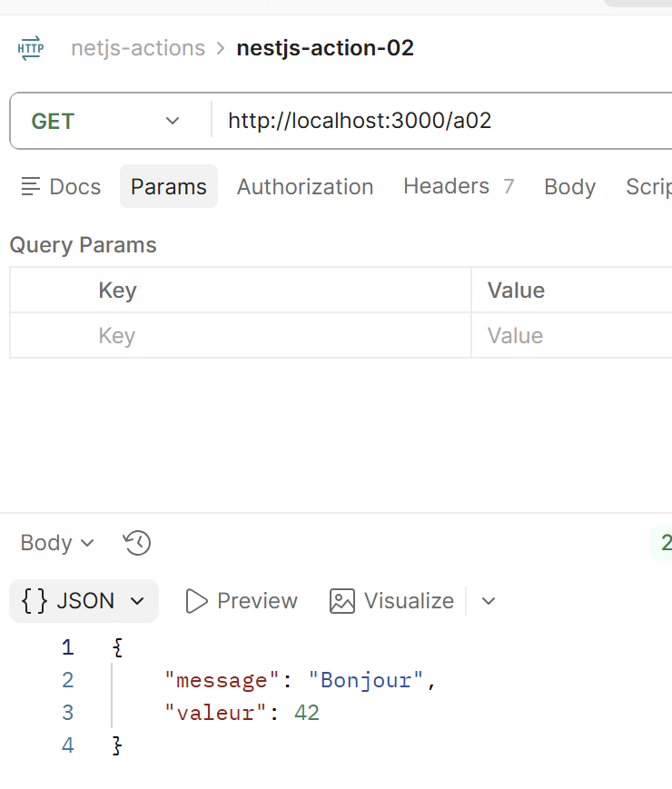
8.5.2.3. Action a04

To view the header sent by the server:
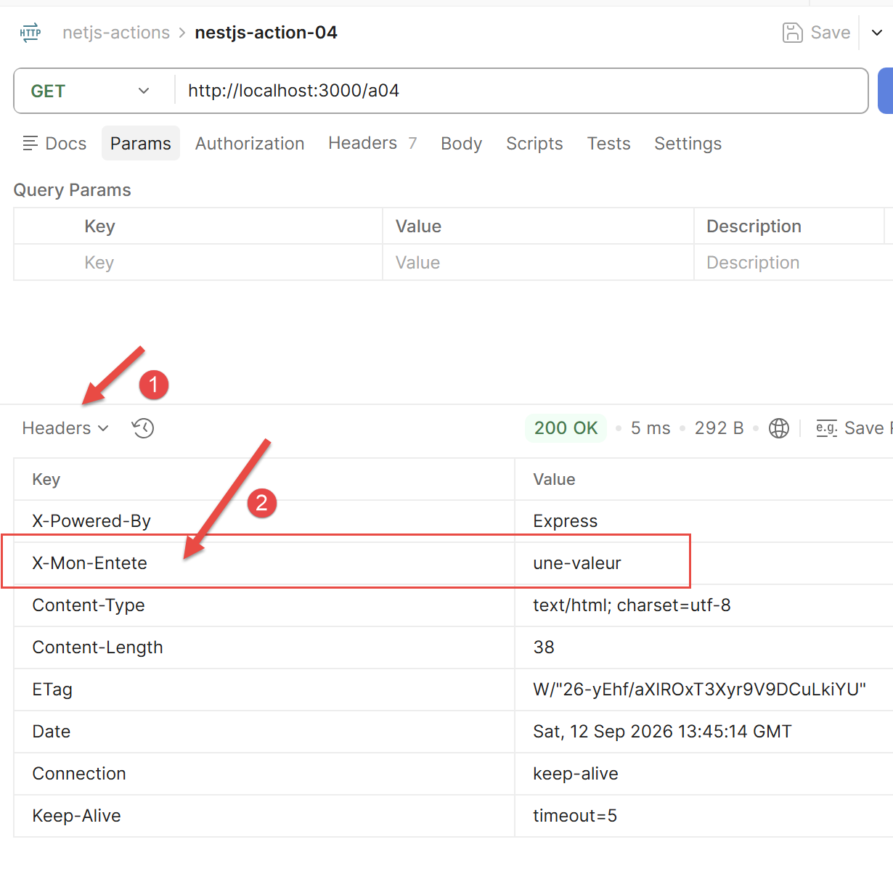
8.5.2.4. Action a05

In [1], the site to which the Postman client was redirected.
8.5.2.5. Action a06
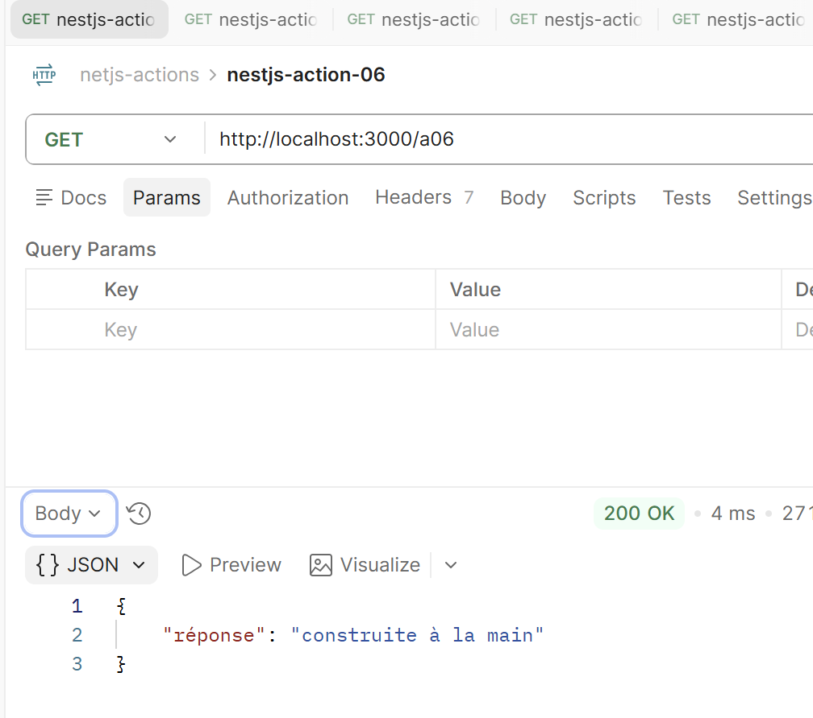
8.5.3. Conclusion
NestJS therefore offers two approaches for constructing a response: either let the framework build it automatically based on the value returned by the method—the most common case, illustrated by [/a01] to [/a05] — or, using @Res(), you take full, manual control over the response HTTP, at the cost of having to manage everything yourself ([/a06]).
8.6. Actions: the model
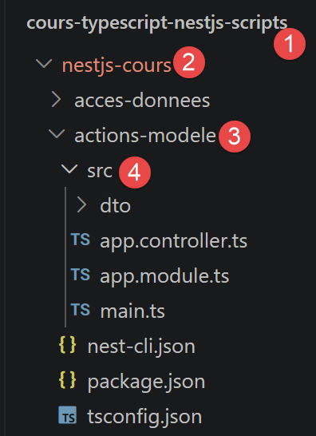
This chapter is the counterpart to the previous one: the focus is no longer on building the response, but on retrieving the information provided by the client’s request (URL parameters, sent body, headers, etc.). As in the previous chapter, all actions are methods of the same controller AppController annotated with @Controller() without a prefix, and the server listens by default on port 3000—the URL below are therefore all in the form http://localhost:3000/....
8.6.1. The Components of the NestJS Application
Let’s take a closer look at the files (see 4 above) that make up the actions-modele project.
8.6.1.1. src/app.controller.ts
// src/app.controller.ts
// Chapter 4 of the course: Actions, the Model — [/m01] to [/m08]
import {
Body,
Controller,
Get,
Headers,
Param,
Post,
Query,
Req,
Session,
UsePipes,
ValidationPipe,
} from '@nestjs/common';
import { Request } from 'express';
import { CalculDto } from './dto/calcul.dto';
@Controller()
export class AppController {
// [/m01]: Parameters of a GET — Tested by GET /m01?name=Serge&age=60
@Get('m01')
m01(@Query('nom') nom: string, @Query('age') age: string): object {
return { nom, age };
}
// [/m02]: elements of a URL
@Get('m02/:id')
m02(@Param('id') id: string): object {
return { id };
}
// [/m03]: Parameters of a POST
@Post('m03')
m03(@Body() corps: any): object {
return corps;
}
// [/m04]: Map posted parameters to a class
@Post('m04')
m04(@Body() données: CalculDto): CalculDto {
return données;
}
// [/m05]: Validating the action model (ValidationPipe local)
@Post('m05')
@UsePipes(
new ValidationPipe({
transform: true,
transformOptions: { enableImplicitConversion: true },
}),
)
m05(@Body() données: CalculDto): CalculDto {
return données;
}
// [/m06]: Access a header HTTP
@Get('m06')
m06(@Headers('user-agent') userAgent: string): object {
return { userAgent };
}
// [/m07]: Access the session
@Get('m07')
m07(@Session() session: Record<string, any>): object {
session.compteur = (session.compteur ?? 0) + 1;
return { compteur: session.compteur };
}
// [/m08]: access the entire request
@Get('m08')
m08(@Req() req: Request): object {
return { méthode: req.method, url: req.url };
}
}
A single class, AppController, contains eight methods, with all the decorators (@Query, @Param, @Body, @Headers, @Session, @Req) and the CalculDto (see [/m04] and [/m05]) used by one or more of them. We’ll discuss these methods shortly.
8.6.1.2. src/app.module.ts
Same note as in the previous chapter: no providers here either, as this project does not define any separate services.
8.6.1.3. src/main.ts
Let’s comment on this code:
- line 9: app.use(session({ secret: 'xxx', resave: false, saveUninitialized: false })); — installs the Express middleware
express-session— it is this line, which appears only once here and applies to the entire application, that enables the session counter seen in [/m07]. The secret is used to sign the session cookie; in production, it must come from an environment variable and should never be written in plain text in the code. - lines 10–15: app.useGlobalPipes(new ValidationPipe({ ... })); — Globally declares, for all controllers in the application, the same ValidationPipe as the one applied locally to [/m05] with @UsePipes. The two options
transform: trueandenableImplicitConversion: trueenable automatic type conversion (specifically, from strings inURLto numbers) before validation.
8.6.1.4. [/m01]: parameters of a GET
Let’s comment on this code:
- line 1: [@Get('m01')] — as in the previous chapter, this decorator associates the method with the route GET /m01.
- line 2: [m01(@Query('nom') nom: string, @Query('age') age: string): object {] — @Query(name) is a new decorator, applied this time to a method parameter rather than to the class or method itself: It extracts a parameter from the query string (the part of URL after the ?, in the form of key=value separated by &) and provides it directly as an argument—already named and typed—without requiring you to retrieve it yourself. Here, @Query('name') extracts the "name" parameter and assigns it to the variable
name, and the same applies toage. This action can therefore be tested at http://localhost:3000/m01?nom=Serge&age=60, which will return name = "Serge" and age = "60" (a query string value is always received as a string, even if it looks like a number). - Line 3: [ return { nom, age };] — shorthand notation for { name: name, age: age }: when the property name and the variable name are identical, you can write just the name.
8.6.1.5. [/m02]: elements of a URL
Let’s comment on this code:
- Line 1: [@Get('m02/:id')] — the :id in the route path is a variable segment (a route parameter): NestJS captures what appears at that specific location in the requested URL. A request to http://localhost:3000/m02/5 thus captures 5; a request to /m02/abc would capture abc.
- Line 2: [m02(@Param('id') id: string): object {] — @Param(name) is the complementary decorator to @Query, as seen in [/m01]: where @Query reads the query string (after the ?), @Param reads a variable segment of the path itself (here: id). @Param('id') therefore injects the captured value into the id variable.
- Line 3: [ return { id };] — simply returns the received value, encapsulated in an object.
8.6.1.6. [/m03]: parameters of a POST
Let’s comment on this code:
- Line 1: [@Post('m03')] — @Post() is the decorator equivalent to @Get() for the HTTP POST verb, normally used to send data to the server (creating a resource, submitting a form, etc.) rather than for reading a simple URL. Unlike the previous actions, this one cannot be tested by simply typing the URL into a browser (which only makes GET requests): you need a client capable of sending a POST
- line 2: [ m03(@Body() corps: any): object {] — @Body(), without arguments, injects the entire request body this time (unlike @Query/@Param, which each read a single named field);
anyis the typeTypeScript, meaning “any type,” used here because no specific format has yet been imposed on the received data (see[/m04]for a typed version). - line 3: [ return corps;] — returns the received body as-is, to verify what was sent.
8.6.1.7. [/m04]: Map the posted parameters to a
dto/calcul.dto.ts
Let's comment on this code:
- Line 1: [// dto/calcul.dto.ts] — a comment to identify the file; has no effect on execution.
- line 2: [export class CalculDto {] — a class that solely describes the format of the expected data, without any methods — this is called a DTO (Data Transfer Object), a simple typed data structure used to transfer information from one part of the program to another (in this case, from the client to the controller).
- Line 3: [ marié: string;] — a typed property: married must be a string — TypeScript will check this type at compile time.
- Line 4: [ enfants: number;] — “children” must be a number.
- Line 5: [ salaire: number;] — The salary must be a number.
Let's break down this code:
- Line 1: [@Post('m04')] — same note as for [/m03]: test this with Postman or curl, not directly in a browser’s address bar.
- line 2: [m04(@Body() données: CalculDto): CalculDto {] — still @Body(), as in [/m03], but this time the
datavariable is typed as CalculDto rather thanany: NestJS automatically converts the received jSON into an instance of this class, with its named and typed properties (married, children, salary) rather than some generic, untyped object—which enables validation by the TypeScript compiler and autocompletion in the editor. Note: At this stage, there is still no guarantee that the received data actually conforms to this format (a client could send anything)—see[/m05]for actual validation.
8.6.1.8. [/m05]: Validating the action model
We install two companion libraries for NestJS for validation:
dto/calcul.dto.ts
Let’s comment on this code:
- Line 1: [import { IsIn, IsInt, Min } from 'class-validator';] — class-validator is a library independent of NestJS (but very widely used with it) that allows you to define validation rules directly on a class’s properties using decorators—such as @IsIn, @IsInt, and Min, which are imported here.
- Line 4: [ @IsIn(['oui', 'non'])] — @IsIn([...]) requires that the value of the following property (married) be part of the given list—in this case, only 'yes' or 'no'; any other value will be rejected.
- Line 7: [ @IsInt() @Min(0)] — Two decorators can be applied to the same property, one after the other: @IsInt() requires an integer, and @Min(0) requires a value greater than or equal to 0 — both rules apply together to “children.”
Let’s comment on this code:
- line 1: [import { Body, Post, UsePipes, ValidationPipe } from '@nestjs/common';] — imports, in addition to the decorators already known, UsePipes and ValidationPipe
- line 3: [@Post('m05')] — to be tested with Postman or curl (POST), not in a browser’s address bar.
- Line 4: [@UsePipes(new ValidationPipe())] — a pipe. NestJS is a mechanism that interposes itself between the received request and the method’s code to transform or validate data before it reaches the controller. ValidationPipe, provided by NestJS, is the standard validation pipe: it re-evaluates the class-validator decorators applied to DTO (@IsIn, @IsInt, @Min...) and automatically rejects any request whose data does not comply with them—with a HTTP 400 (Bad Request) response—without requiring you to write a single
ifstatement yourself. @UsePipes() is the decorator that enables a pipe on a specific method.
8.6.1.9. [/m06]: Accessing a Header HTTP
Let’s comment on this code:
- Line 1: [@Get('m06')] — accessible at http://localhost:3000/m06.
- line 2: [m06(@Headers('user-agent') userAgent: string): object {] — @Headers(name) reads a specific HTTP header from the incoming request (as opposed to @Header(), discussed in the previous chapter, which added a header to the outgoing response—same word, opposite meaning depending on whether you’re reading or writing). Here, @Headers('user-agent') retrieves the User-Agent header (the name of the browser or tool that sent the request, automatically sent by any client). Without an argument, @Headers() would return an object containing all the request headers.
- Line 3: [ return { userAgent };] — returns the read value, encapsulated in an object.
8.6.1.10. [/m07]: Accessing the session
main.ts
Let’s comment on this code:
- Line 2: [app.use(session({ secret: 'xxx', resave: false, saveUninitialized: false }));] — app.use(...) registers an Express middleware—a process executed for every incoming request before it reaches any controller. Here, the session middleware (provided by the express-session library) sets up session management for the entire application:
secretis used to sign the session cookie (to prevent it from being tampered with), andresaveandsaveUninitializedare options that control when the session is actually saved on the server side.
Let’s break down this code:
- line 1: [import { Get, Session } from '@nestjs/common';] — imports the @Session decorator
- line 3: [@Get('m07')] — accessible at http://localhost:3000/m07 — refreshing the page multiple times increments the counter; its value is preserved on the server side between requests.
- line 4: [m07(@Session() session: Record<string, any>): object {] — a session is a storage space associated with a specific visitor, maintained on the server side across multiple successive requests — unlike an ordinary variable, which would be reset with each new request. The client is identified by a cookie containing a session ID, which the browser automatically sends with each request once it has been received. @Session() directly injects this storage space as an argument to the method.
- line 5: [ session.compteur = (session.compteur ?? 0) + 1;] — the ?? operator (null coalescing) returns its right-hand side only if the left-hand side is null or undefined — here, it initializes the counter to 0 on the very first visit, before incrementing it by 1 on each subsequent request.
- Line 6: [ return { compteur: session.compteur };] — returns the current value of the counter, stored in the session.
This is exactly the express-session we used in Chapter 6 to store the authentication and the list of simulations for the tax calculation server.
8.6.1.11. [/m08]: Access the entire request
Let’s break down this code:
- line 1: [import { Get, Req } from '@nestjs/common';] — imports the @Req decorator
- line 2: [import { Request } from 'express';] — imports the TypeScript Request type provided by Express, to type the parameter below.
- Line 4: [@Get('m08')] — available at http://localhost:3000/m08.
- Line 5: [m08(@Req() req: Request): object {] — @Req() directly injects the raw Express request object, along with everything it contains (method, URL, headers, body, parameters...), rather than a single piece of information at a time as @Query, @Param, @Body, @Headers, or @Session. On the request side, this is the exact equivalent of what @Res() was on the response side for [/a06] in the previous chapter: less automation provided by NestJS, but full, uncompromised access.
- Line 6: [ return { méthode: req.method, url: req.url };] — directly reads two properties of the Express request object: method (the verb HTTP used) and url (the requested path).
Running the NestJS application

In a terminal at the project root, type the command:
You will receive the following response:
8.6.2. Postman Tests
For Postman testing, you can use the following request collection:
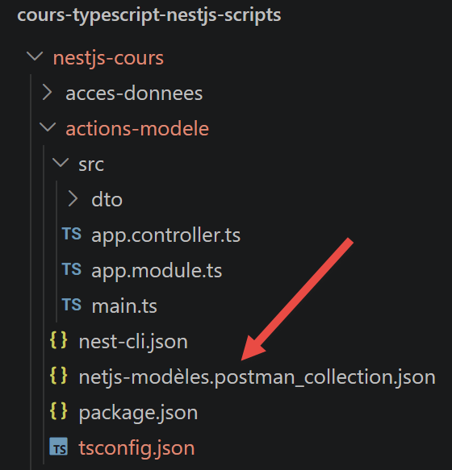
Here are the Postman tests for the application’s eight methods:
8.6.2.1. Action m01

8.6.2.2. Action m02
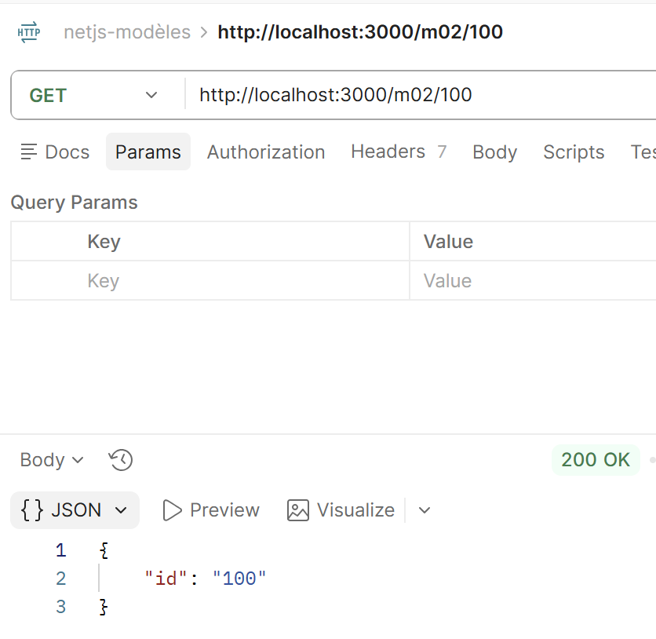
8.6.2.3. Action m03
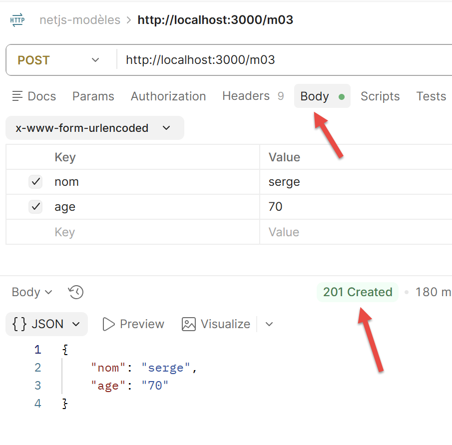
8.6.2.4. Action m04

8.6.2.5. Action m05
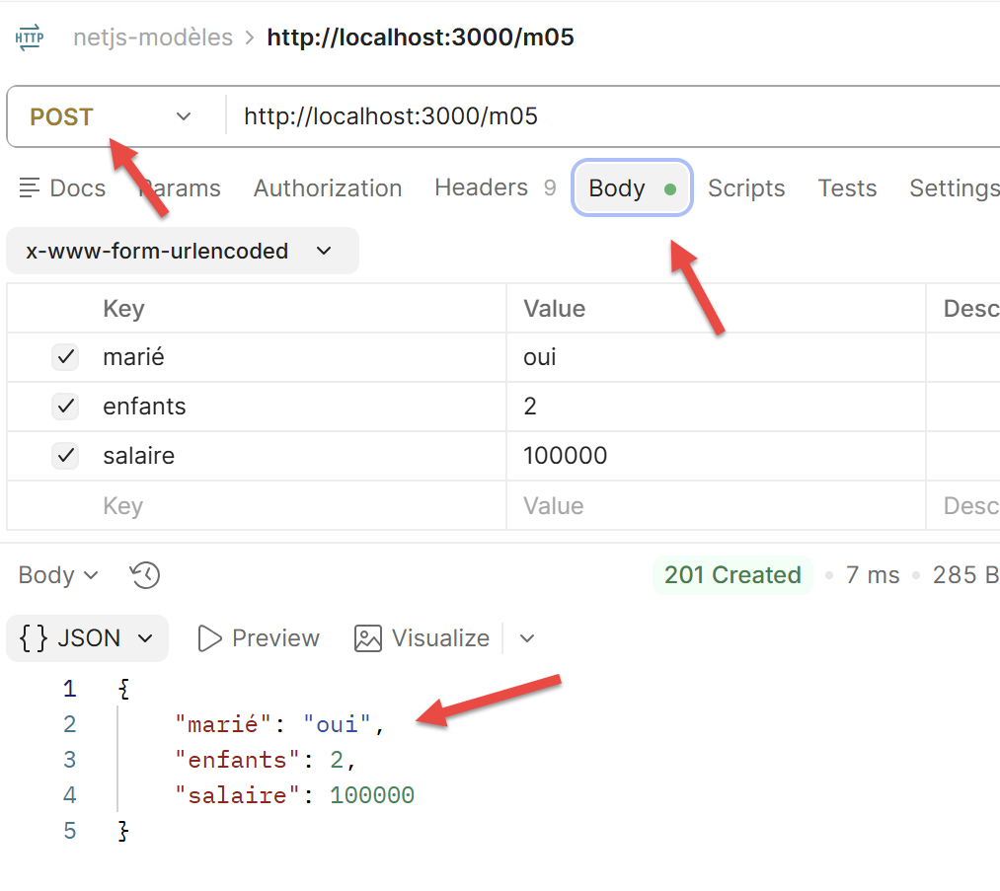

8.6.2.6. Action m06
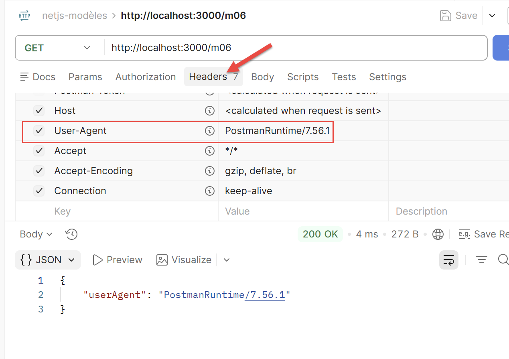
8.6.2.7. Action m07
After 3 requests:
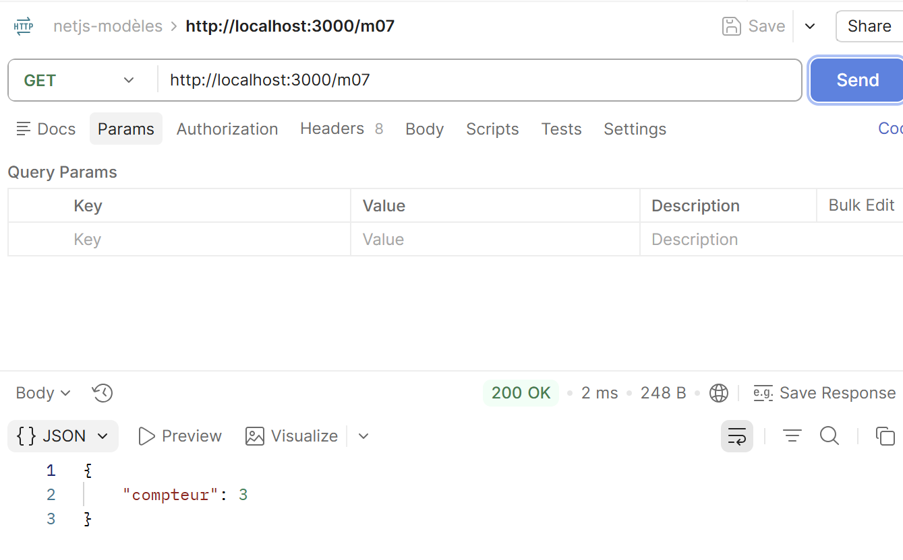
8.6.2.8. Action m08
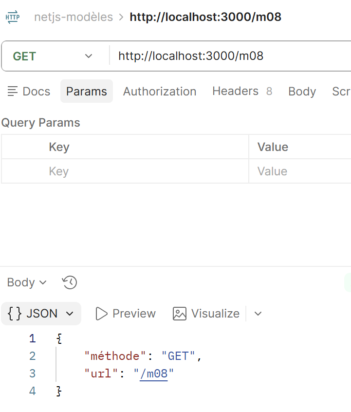
8.6.3. Conclusion
@Query, @Param, @Body, @Headers, and @Session cover the vast majority of needs; @Req() remains available for full, uncompromised access to the request—this is the option chosen by the [m06] action in our case study, for the same reasons as the [/a06] action.
8.7. Data Access: NestJS and Databases
NestJS offers several ways to access a database: three approaches coexist in the Node ecosystem, ranging from the one closest to SQL to the one closest to a ORM with decorated entities—unlike Spring Data, which imposes a single approach on Java developers.

8.7.1. The native driver: a hand-coded [DAO] layer
Node provides lightweight drivers for each SGBD (mysql2 for MySQL, pg for PostgreSQL...) that directly expose the SQL: You write the queries yourself, with no abstraction layer between the code and the database. This is the approach used by the [DAO] layer in our case study: an @Injectable() service opens a connection and executes explicit SQL queries.

Excerpt from src/model/server-dao.service.ts (chapter [étude de cas]):
import mysql from 'mysql2/promise';
@Injectable()
export class ServerDaoService {
private async getTaxAdminDataFromMysql(): Promise<TaxAdminData> {
const connection = await mysql.createConnection({
host: 'localhost',
database: 'dbimpots-2019',
user: 'admimpots',
password: 'mdpimpots',
});
const [tranches] = await connection.query(
'select limites, coeffR, coeffN from tbtranches order by id',
);
// ... constructing the object [TaxAdminData] from the read lines
await connection.end();
return taxAdminData;
}
}
Let’s comment on this code:
- Line 1: [import mysql from 'mysql2/promise';] — the MySQL/MariaDB driver is imported for Node.js (the mysql2 package); the mysql2/promise subpath provides the Promise-based variant (and thus usable with
await), rather than the legacy callback-based variant; - line 3: [@Injectable()] — this decorator marks the following class as a NestJS provider: a class that NestJS can instantiate itself and inject into the constructor of another class (here, ServerDaoService will be injected into an action controller; see the next chapter) — without this decorator, NestJS would not be able to create it automatically;
- line 6: [const connection = await mysql.createConnection({ ... })] — mysql.createConnection(...) opens a new network connection to the server MySQL/MariaDB, with the host, database, username, and password provided directly as parameters;
awaitsuspends the function’s execution until the connection is successfully established; - line 12: [const [tranches] = await connection.query('select ... order by id')] — connection.query(...) executes the query SQL passed as a string; the method returns an array of two elements, the first of which (retrieved here via destructuring, [tranches]) contains the read rows—no SQL is generated, and there is no object-relational mapping: this is exactly the text that is written to the database;
- line 16: [await connection.end();] — the connection is explicitly closed once reading is complete — with the native driver, connection lifecycle management is entirely the responsibility of the code, unlike the two ORM examples presented later.
This approach provides complete control over the SQL being executed, without any “magic” or automatic query generation: what you see in the code is exactly what is sent to MySQL (the same philosophy as JdbcTemplate in Spring MVC, or as PDO used directly in PHP, for those familiar with one of these environments).
8.7.2. TypeORM: the equivalent of Spring Data JPA
TypeORM is the most commonly used ORM alongside NestJS: here, tables are defined as decorated TypeScript classes (the “entities”), and the database is queried through an injected Repository, without writing any SQL queries for simple cases (this is the ORM that is most similar, in concept, to Spring Data JPA / Hibernate, for those familiar with that environment).
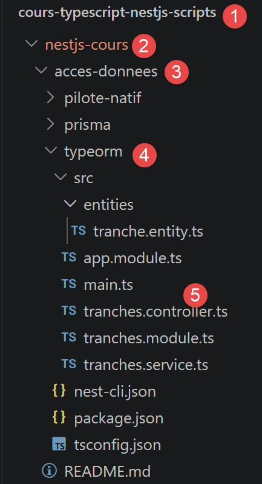
8.7.2.1. Module Configuration
In the application’s root module (app.module.ts), the database connection is declared once, using TypeOrmModule.forRoot(...):
app.module.ts
Let’s comment on this code:
- line 1: [// app.module.ts] — this comment simply indicates where the snippet comes from: this block, TypeOrmModule.forRoot({...}), is an element in the
importslist of the application’s root@Module({...}), not a standalone file; - line 2: [TypeOrmModule.forRoot({ ... })] — forRoot(...) configures, once for the entire application, the database connection—the equivalent of the DataSource we saw earlier with TypeORM, excluding NestJS (Chapter 2); each module that requires a specific entity will then simply declare it using TypeOrmModule.forFeature(...), as shown below;
- line 9: [entities: [Tranche],] — the list of entity classes (here, only one: Tranche) that TypeORM must recognize in order to establish the correspondence between the TypeScript classes and the SQL tables;
- Line 10: [synchronize: false,] — if set to true, TypeORM would automatically modify the database schema to match the entities — useful at the very beginning of a project, but dangerous once a live database contains data: We’ll leave it set to false here, as is recommended whenever working with an existing database.
8.7.2.2. Entities
An entity is an ordinary TypeScript class, to which decorators add the necessary information to map it to a SQL table and its columns:
entities/tranche.entity.ts
Let’s comment on this code:
- line 1: [import { Entity, PrimaryGeneratedColumn, Column } from 'typeorm';] — we import the three decorators used later in this file from the typeorm package;
- line 3: [@Entity('tbtranches')] — this decorator declares that the following class represents a table named SQL: the 'tbtranches' argument specifies the actual name of this table in the database—without it, TypeORM would have inferred a table name from the class name, which is not appropriate here since the existing table is named tbtranches and not tranche;
- line 5: [@PrimaryGeneratedColumn()] — marks the following property (id) as the table’s primary key, whose value is automatically generated by the database (auto-increment) — so you never have to specify a value for id yourself when creating the table;
- line 8: [@Column('decimal')] — designates the following property (limits) as a regular column in the table; the 'decimal' argument specifies the column's type as SQL — the other two columns (coeffR, coeffN) are declared in the same way.
@Entity, @Column, @PrimaryGeneratedColumn: the terminology used is almost identical to that of JPA (@Entity, @Column, @Id + @GeneratedValue) —- TypeORM was deliberately designed to be familiar to those familiar with Hibernate, but nothing here assumes such knowledge: these decorators alone are sufficient to map the class to the table.
8.7.2.3. The Repository
The Repository is the object that provides access to the rows in the table, without requiring you to write your own queries SQL for common operations:
tranches.service.ts
Let’s comment on this code:
- line 1: [import { InjectRepository } from '@nestjs/typeorm';] — InjectRepository is the decorator specific to @nestjs/typeorm that allows you to request the injection of a specific Repository (see below);
- line 4: [@Injectable()] — as above, this decorator turns TranchesService into a provider that NestJS can instantiate and inject elsewhere — in this case, into the controller below;
- line 7: [@InjectRepository(Tranche)] — placed before a constructor parameter, this decorator instructs NestJS to inject the Repository already configured for the Tranche entity—the one that TypeOrmModule.forFeature([Tranche]) registers in the module (see below); without it, NestJS would not know which Repository to provide;
- line 11: [return this.tranchesRepository.find({ order: { id: 'ASC' } });] — find(...) reads all rows from the table, sorted by id in ascending order, and returns a Promise of an array of Tranche — no hand-written SQL queries, unlike the native driver approach seen above.
Repository<Tranche> is an object provided by TypeORM that is ready to use as soon as it is injected: it already provides the common methods (find, findOne, save, delete...) for the table associated with the Tranche entity, without having to write them yourself (exactly the same role played by JpaRepository<Tranche, Integer> on the Spring Data side, for those familiar with that environment).
8.7.2.4. A controller using the Repository
All that remains is to declare a module that links the entity, the service, and the controller, and then a controller that exposes the service as HTTP:
tranches.module.ts
- line 1: [@Module({ ... })] — this decorator, which we’ve seen before, marks the class as a NestJS module: a unit that groups together related elements (in this case, everything related to tax brackets);
- line 2: [imports: [TypeOrmModule.forFeature([Tranche])],] — forFeature([Tranche]) registers, for this specific module, the Repository for the “Bracket” entity (built from the connection already opened by forRoot(...) in the root module) -- it is this Repository that @InjectRepository(Tranche) will retrieve further up;
- line 3: [providers: [TranchesService],] — the list of @Injectable() classes that this module makes available — here, the service that uses the Repository;
- line 4: [controllers: [TranchesController],] — the list of controllers (@Controller() classes) that this module exposes.
tranches.controller.ts
Let’s comment on this code:
- line 1: [@Controller('tranches')] — this decorator marks the class as a controller and sets the prefix URL, which is common to all its routes: 'tranches', i.e., /tranches — each annotated method within it will add its own segment of URL, if applicable;
- line 3: [constructor(private readonly service: TranchesService) {}] — constructor injection, as seen earlier: NestJS automatically provides an instance of TranchesService;
- line 5: [@Get()] — associates the following method with GET requests; when used without arguments, as here, it responds directly to the controller’s base URL request—no additional segment, so simply /tranches (and not, for example, /tranches/all);
- line 7: [return this.service.findAll();] — the Slice array returned by the service is automatically serialized into jSON by NestJS and sent as the body of the HTTP response.
8.7.3. Running the project
Once the project has been started (npm run start:dev, after creating the dbimpots-2019 database with the provided SQL script), this action can be tested at the URL http://localhost:3000/tranches (method GET, without parameters): it returns the list of tax brackets in the jSON format.
In a terminal at the root of the [typeorm] folder, type the command:
The terminal displays the following text:
[Nest] 26548 - 12/09/2026 18:15:33 LOG [NestFactory] Starting Nest application...
[Nest] 26548 - 12/09/2026 18:15:33 LOG [InstanceLoader] AppModule dependencies initialized +65ms
[Nest] 26548 - 12/09/2026 18:15:33 LOG [InstanceLoader] TypeOrmModule dependencies initialized +0ms
[Nest] 26548 - 12/09/2026 18:15:33 LOG [InstanceLoader] TypeOrmCoreModule dependencies initialized +18ms
[Nest] 26548 - 12/09/2026 18:15:33 LOG [InstanceLoader] TypeOrmModule dependencies initialized +0ms
[Nest] 26548 - 12/09/2026 18:15:33 LOG [InstanceLoader] TranchesModule dependencies initialized +0ms
[Nest] 26548 - 12/09/2026 18:15:33 LOG [RoutesResolver] TranchesController {/tranches}: +5ms
[Nest] 26548 - 12/09/2026 18:15:33 LOG [RouterExplorer] Mapped {/tranches, GET} route +2ms
[Nest] 26548 - 12/09/2026 18:15:33 LOG [NestApplication] Nest application successfully started +2ms
typeorm démarré : http://localhost:3000/tranches (requires a dbimpots-2019 database)
8.7.4. Postman Test
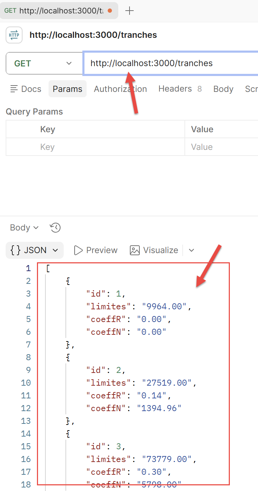
8.7.5. Prisma: A Modern Alternative
Prisma is another very popular framework in the Node ecosystem. Its philosophy differs from that of TypeORM: its schema is defined in a file, and a fully typed client is generated (prisma generate) from that schema—more akin, in spirit, to a code generator than to an “annotation-based” approach.
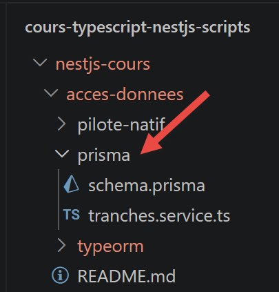
schema.prisma
Let’s break down this code:
- line 1: [// schema.prisma] — this file is not TypeScript, but a file written in Prisma’s own description language, the Prisma Schema Language;
- line 2: [model Tranche {] — the
modelkeyword declares a Prisma model namedTranche— it is from this model thatprisma generatewill later produce aTypeScriptclass and the associated methods; - line 3: [id Int @id @default(autoincrement())] — @id marks the id field as the model’s primary key; @default(autoincrement()) indicates that its value is automatically generated by the database via auto-increment—the Prisma equivalent of the @PrimaryGeneratedColumn() from TypeORM seen above;
- line 7: [@@map("tbtranches")] — a “block” attribute (prefixed with two @ symbols, since it applies to the entire model and not to a single field) that specifies the actual table name SQL, tbtranches — the equivalent of the argument passed to @Entity('tbtranches') in TypeORM.
The [tranches.service.ts] file is as follows:
Let’s comment on this code:
- line 1: [const tranches = await this.prisma.tranche.findMany({ ... })] — this.prisma here refers to an injected PrismaService (not covered in this course), which exposes the client generated by
prisma generate;trancheis the property automatically generated from theTranchemodel in the schema above, andfindMany(...)reads all of its rows—the Prisma equivalent of thefind(...)method fromRepositoryseen earlier; - Line 2: [orderBy: { id: 'asc' },] — specifies the sorting of the results — the Prisma equivalent of the
order: { id: 'ASC' }option passed to thefind(...)method of TypeORM.
8.7.6. Which approach should you choose?
- The native driver: Simple, with full control over the executed SQL — this is the default choice for the case study in Chapter 6, to remain faithful to the original PHP server, which itself used PDO directly;
- TypeORM: the closest to Spring Data JPA / Hibernate, useful as the number of entities and relationships grows;
- Prisma: the most “modern” approach (fully generated typing), currently recommended for new projects, but less immediately familiar if you’re coming from Spring Data JPA.